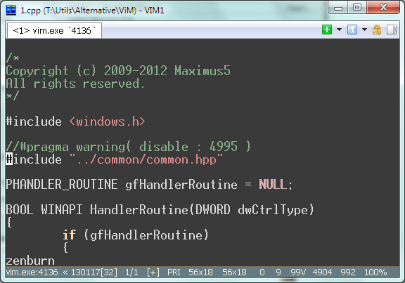

How to enable 256-color console Vim syntax highlight in ConEmu

- Vim's executable must be named ‘vim.exe’;
- Check options ‘Inject ConEmuHk’ and ‘ANSI X3.64 / xterm 256 colors’ on Features page;
- Check option ‘TrueMod (24bit color) support’ on Colors page;
- Edit your ‘vimrc’ file, sample lines are here. Of course, you need some 256-color vim scheme, it is ‘zenburn’ in the last line of this example.
if !has("gui_running")
set term=xterm
set t_Co=256
let &t_AB="\e[48;5;%dm"
let &t_AF="\e[38;5;%dm"
colorscheme zenburn
endif
You may also check environment variable ConEmuANSI but I'm not sure how to do that properly.
Note. GIT's Vim and ‘Original’ Vim (from gvim73_46.exe) are passed tests. MinGW's Vim fails to switch to using Ansi sequences.
How to enable Vim scrolling using mouse Wheel in ConEmu
When ConEmu emulates xterm it translates mouse wheel to the following sequences:
| Event | Sequence | Description |
| <WheelDown> | "\e[62~" | toward the user |
| <WheelUp> | "\e[63~" | away from the user |
| <Shift><WheelDown> | "\e[64~" | toward the user |
| <Shift><WheelUp> | "\e[65~" | away from the user |
So all you need to add following lines to your vimrc file:
""""""""""""""""""""""""""""""""""""""
" let mouse wheel scroll file contents
""""""""""""""""""""""""""""""""""""""
if !has("gui_running")
set term=xterm
set mouse=a
set nocompatible
inoremap <Esc>[62~ <C-X><C-E>
inoremap <Esc>[63~ <C-X><C-Y>
nnoremap <Esc>[62~ <C-E>
nnoremap <Esc>[63~ <C-Y>
endif